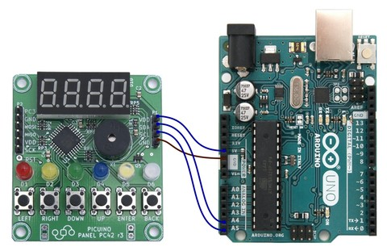
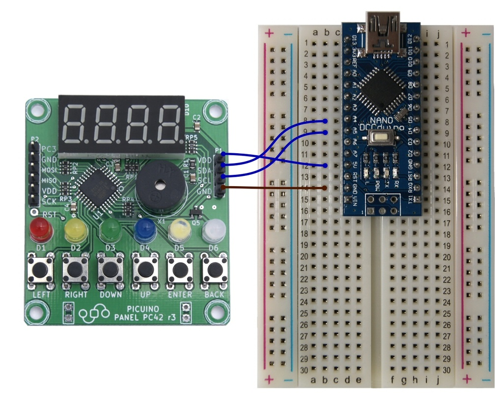

2. Instal·lació del panell de control PC42¶
Els pendents¶
- Connecteu el tauler de control PC42 a una placa Arduino
- Instal·leu: Descarregueu: Biblioteques necessàries per programar el panell PC42 <_downloads/pc42.zip> `
- Instal·leu: Descarregueu: eina Arcublock-Picuino <_Downloads/Arduck-Picuino.Zip> Per programar amb blocs gràfics
- Instal·leu altres "biblioteques auxiliars d'Arduino. <../../_ static/descàrregues/arduino-libraries.zip>`__
Instal·lació¶
Per instal·lar el tauler de control PC42 PICUINO, cal realitzar dues operacions:
- Connecteu el panell PC42 a un Arduino per 4 cables masculins-hembra
- Instal·leu la biblioteca de control PC42
També podeu afegir l’eina de programació de blocs Ardublock.
Connexió amb Arduino One¶
{kind=link}

A la taula següent es mostren les connexions necessàries per comunicar la placa Arduino UNO amb el panell PC42:
Agulla Color Tauler PC42 Arduino One 1 Blava VDD +5V VDD +5V 2 Blava SDA A4 3 Blava SCL A5 4 Marró Gnd 0v Gnd 0v
Les connexions del panell PC42 estan protegides contra la inversió de polaritat, de manera que el panell no es danyarà encara que els cables s’intercanvien. L’única connexió que pot causar danys permanents al panell és una dieta per sobre de 5 volts, que es pot trobar al pin "d'Arduino quan s'alimenta amb bateria externa.
Connexió amb Arduino Nano¶
{kind=link}

A la taula següent es mostren les connexions necessàries per comunicar la placa Nano Arduino amb el panell PC42:
Agulla Color Tauler PC42 Arduino Nano 1 Blava VDD +5V VDD +5V 2 Blava SDA A4 3 Blava SCL A5 4 Marró Gnd 0v Gnd 0v
Instal·lació de l’entorn Arduino¶
Per tal de treballar amb la placa Arduino, cal instal·lar el programari de programació Arduino i els controladors corresponents.
A la secció de: Ref: Solució de problemes amb Arduino <Resolució de problemes-Supplies> Tots els passos per instal·lar el programari de plaques Arduino i resoldre els errors d'instal·lació més freqüents es poden trobar.
Instal·lació de la llibreria per al panell PC42¶
Per tal que funcioni el tauler de control PC42, cal descarregar i instal·lar una llibreria per a Arduino.
Descarregueu la llibreria del panell de control PC42 per a Arduino.
: Descarregueu: PC42 R3 Bookstore <_Downloads/PC42.zip>
Seguiu els passos d’instal·lació descrits a la pàgina següent.
: Ref: `add-library '
Instal·lació Ardublock¶
Ardublock és una eina per a Arduino que permet programar amb blocs gràfics. Està orientat a facilitar la programació als usuaris sense experiència, simplificant la tasca de realitzar programes amb un entorn gràfic senzill.

La versió Arcublock-Picuino és encara més senzilla que el projecte Arcublock original i conté les instruccions necessàries per a la programació del panell de control PC42.
Per instal·lar la versió més recent d’Ardublock-Picuino, heu de seguir els passos següents:
Descarregueu LA: Descarregueu: eina Arcublock-Picuino <_downloads/arduck-picuino.zip>
Copieu el fitxer al directori Arduino. El directori es pot trobar a l’entorn Arduino, prement el menú:
`` Arxiu ... preferències ... Ubicació del projecte ''.
Descomprimeix el fitxer al directori d'Arduino.
Tancar i reobrir l’entorn d’Arduino. La nova eina ha d’aparèixer al menú:
`` Eines ... ardublock ''
Instal·lació de llibreries auxiliars per a Arduino¶
Aquestes biblioteques permeten a la placa Arduino controlar els perifèrics com ara un panell de visualitzadors LCD o emissors i receptors d’infrarojos.
Arxiu de llibreries per a Arduino.
En aquest paquet podeu trobar junts les següents llibreries:
- Dht11 Control del sensor de la humitat i la temperatura DHT11
- Irremote Control de emissors i receptors d'infrarojos
- LiquidCrystal Visualització del control del panell LCD
- NewLiquidcrystal Control de panells de visualitzadors LCD
- Scoop Programació de multitasking
- Sdplus gestió de memòries sd
- MakeBlock Gestió de robots i aparells de makeBlock
- : Descarregueu: PC42 <_Downloads/PC42.ZIP> PC42 Gestió del panell de control PICUINO
Per instal·lar totes les llibreries alhora **, heu de seguir els passos següents:
Descarregueu l'arxiu amb les llibreries per arduino <../../_ static/descàrregues/arduino-libraries.zip>`__
Copieu el fitxer al directori Arduino. El directori es pot trobar a l’entorn Arduino, prement el menú:
`` Arxiu ... preferències ... Ubicació del projecte ''.
Descomprimeix el fitxer al directori d'Arduino.
Tancar i reobrir l’entorn d’Arduino. Les noves llibreries haurien d’aparèixer al menú:
`` Programa ... Inclou la llibreria ... '
Per instal·lar llibreries individuals mitjançant l’entorn Arduino, podeu llegir el següent enllaç a: Ref: Com afegir una llibreria a l’entorn Arduino <den-library>.